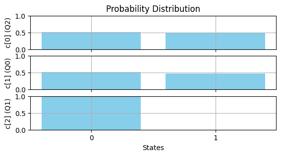
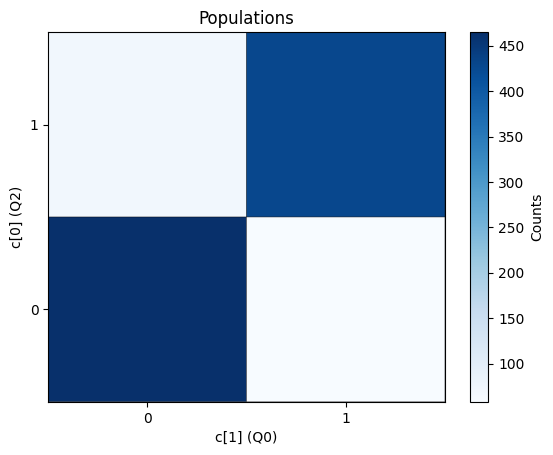

Interfacing Basics
[1]:
from nqct.utils.QuantumSession import QuantumSession
api_key = input('Enter API Key') #<---PASTE_API_KEY_HERE instead of the input(...)
qs = QuantumSession(api_key=api_key, storage_path='temp/')
qs.list_backends();
#Copy over the desired backend from the given list
qs.select_backend('quantware_soprano_d2')
| Name | Backend ID | Qubits | |
|---|---|---|---|
| 0 | Qiskit Aer Simulator | aer_simulator | 5 |
| 1 | QuantWare Soprano D2 | quantware_soprano_d2 | 7 |
[2]:
my_script = r"""
OPENQASM 3;
include 'stdgates_transmon_fixed_coupler.inc';
bit[3] c;
qubit[3] q;
z q[0];
rx(pi/2) q[0];
z q[1];
ry(pi/2) q[1];
ctrl @ z q[0], q[1];
z q[1];
ry(pi/2) q[1];
delay[0] q;
c[0] = measure q[0];
c[1] = measure q[1];
c[2] = measure q[2];
"""
qs.set_qasm(my_script)
qs.get_qregs_in_qasm()
[2]:
[('q', 0), ('q', 1), ('q', 2)]
The QASM registers need to be mapped onto physical qubits. They are by default mapped onto the physical qubits ($0,$1,$2…) in the order of their register declarations, but one may explicitly set them via (optionally validating the configuration soonafter):
[3]:
qs.set_qreg_physical_mapping({('q',0):2, ('q',1):0, ('q',2):1})
qs.validate()
| qubits | qubitsAux | start_time | end_time | gate_type | col_intensity | operation | angle | |
|---|---|---|---|---|---|---|---|---|
| 0 | 2 | -1 | 0.000000e+00 | 0.000000e+00 | Z(π) | 0.000000 | Z | 3.141593e+00 |
| 1 | 2 | -1 | 0.000000e+00 | 3.200000e-08 | X(π/2) | 0.000000 | X | 1.570796e+00 |
| 2 | 0 | -1 | 0.000000e+00 | 0.000000e+00 | Z(π) | 0.071429 | Z | 3.141593e+00 |
| 3 | 0 | -1 | 0.000000e+00 | 3.200000e-08 | Y(π/2) | 0.071429 | Y | 1.570796e+00 |
| 4 | 1 | -1 | 0.000000e+00 | 3.200000e-08 | 32 ns | 0.142857 | D | 3.200000e-08 |
| 5 | 0 | 2 | 9.377134e-08 | 1.555427e-07 | Z(π) | 0.214286 | Z | 3.141593e+00 |
| 6 | 2 | -1 | 9.377134e-08 | 1.555427e-07 | 61.7713 ns | 0.285714 | D | 6.177134e-08 |
| 7 | 0 | -1 | 9.377134e-08 | 9.377134e-08 | Z(π) | 0.357143 | Z | 3.141593e+00 |
| 8 | 0 | -1 | 9.377134e-08 | 1.257713e-07 | Y(π/2) | 0.357143 | Y | 1.570796e+00 |
| 9 | 0 | -1 | 1.257713e-07 | 1.555427e-07 | 29.7713 ns | 0.357143 | D | 2.977134e-08 |
| 10 | 2 | -1 | 1.555427e-07 | 1.600000e-07 | 4.45733 ns | 0.428571 | D | 4.457328e-09 |
| 11 | 2 | -1 | 1.600000e-07 | 2.160000e-06 | QMEAS | 0.500000 | M | 0.000000e+00 |
| 12 | 0 | -1 | 1.555427e-07 | 1.600000e-07 | 4.45733 ns | 0.571429 | D | 4.457328e-09 |
| 13 | 0 | -1 | 1.600000e-07 | 2.160000e-06 | QMEAS | 0.642857 | M | 0.000000e+00 |
| 14 | 1 | -1 | 1.555427e-07 | 1.600000e-07 | 4.45733 ns | 0.714286 | D | 4.457328e-09 |
| 15 | 1 | -1 | 1.600000e-07 | 2.160000e-06 | QMEAS | 0.785714 | M | 0.000000e+00 |
| 16 | 3 | -1 | 0.000000e+00 | 2.160000e-06 | 2.16 μs | 0.857143 | D | 2.160000e-06 |
| 17 | 4 | -1 | 0.000000e+00 | 2.160000e-06 | 2.16 μs | 0.928571 | D | 2.160000e-06 |
Setup readout parameters
[4]:
qs.set_acquisition_type('DISCRIMINATION')
qs.set_averaging_type('SingleShotCounts')
qs.set_num_shots(1024)
qs.set_shot_repeat(1)
Execute the circuit on the actual backend (note that it will automatically validate the circuit and then send it for execution):
[5]:
leRes = qs.run()
The returned data is stored locally here:
[6]:
leRes.data_folder
[6]:
PosixPath('temp/6a8aa4ea-8389-482a-a372-a69348362710')
The dataset will be sliced differently depending on the acquisition settings. Nonetheless, the slicing parameters can be queried as:
[7]:
leRes.get_inner_slicing_vars()
[7]:
['shot']
The datasets can be queried over an entire classical register or individually within a given register:
[8]:
cur_arrs = leRes.get_data('c')
There are handy visualisation functions where one may plot histograms:
[9]:
leRes.plot_histograms('c')

For a set of two qubits, it’s often handy to see the correlated truth table. This can be readily plotted (using the registers 0 and 1 in this example), with the feature disabled if setting plot_2D_histogram=False:
[10]:
leRes.plot_histograms('c', [0,1], apply_readout_correction=False)

[ ]: